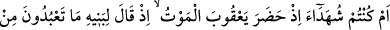
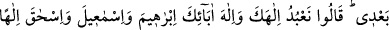
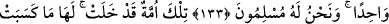
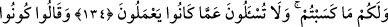
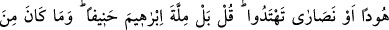
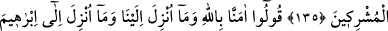
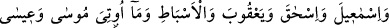
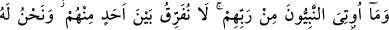
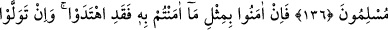
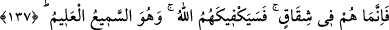

ALLAH SANA YETER
133. Yoksa Ya’kûb’a ölüm geldiği zaman siz orada mı idiniz? O zaman (Ya’kûb)
oğullarına: Benden sonra kime kulluk edeceksiniz? demişti. Onlar: Senin ve
ataların İbrâhîm, İsmâîl ve İshâk’ın ilâhı olan tek Allah’a kulluk edeceğiz; biz
ancak O’na teslim olmuşuzdur, dediler.
134. Onlar bir ümmetti, gelip geçti. Onların kazandıkları kendilerinin sizin
kazandıklarınız sizindir. Siz onların yaptıklarından sorguya çekilmezsiniz.
135. (Yahûdîler ve hıristiyanlar müslümanlara:) Yahûdî ya da hıristiyan olun ki,
doğru yolu bulasınız, dediler. De ki: Hayır! Biz, hanîf olan İbrâhîm’in dinine uyarız.
O, müşriklerden değildi.
136. “Biz, Allah’a ve bize indirilene; İbrâhîm, İsmâîl, İshâk, Ya’kûb ve esbâta
indirilene, Mûsâ ve Îsâ’ya verilenlerle Rableri tarafından diğer peygamberlere
verilenlere, onlardan hiçbiri arasında fark gözetmeksizin inandık ve biz sadece
Allah’a teslim olduk” deyin.
137. Eğer onlar da sizin inandığınız gibi inanırlarsa doğru yolu bulmuş olurlar,
dönerlerse mutlaka anlaşmazlık içine düşmüş olurlar. Onlara karşı Allah sana
yeter. O işitendir, bilendir.
İbrâhîm (a.s.)’in dîninden yüz çeviren ehl-i kitaba hitaben: “Yoksa Ya’kûb’da ölüm
işâretleri ve sebebleri belirip, dünyâdan göçmesi yakınlaştığında, siz onun yanında
mıydınız?” buyurmuştur. Buradaki soru inkâr, yâni olayı redd içindir. “Orada